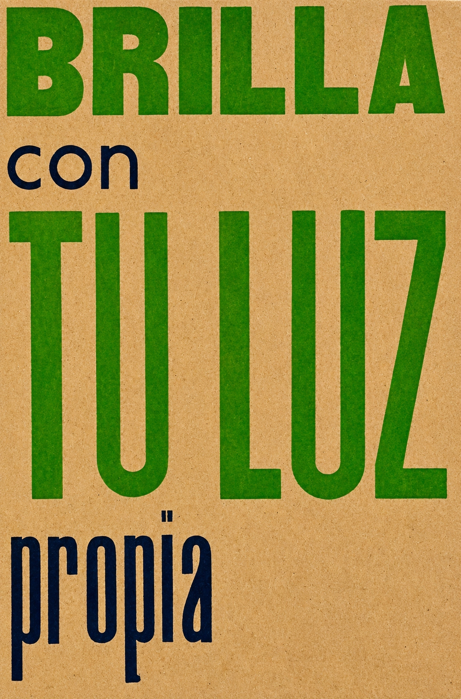

A man from the town of Neguá, on the coast of Colombia, could climb into the sky.
On his return, he described his trip. He told how he had contemplated human life from on high. He said we are a sea of tiny flames.
- The world - he revealed - is a heap of people, a sea of tiny flames.
Each person shines with his or her own light. No two flames are alike. There are big flames and little flames, flames of every color. Some people’s flames are so still they don’t even flicker in the wind, while others have wild flames that fill the air with sparks. Some foolish flames neither burn nor shed light, but others blaze with life so fiercely that you can’t look at them without blinking and if you approach, you shine in fire.
Translated by Cedric Belfrage
Un hombre del pueblo de Neguá, en la costa de Colombia, pudo subir al cielo.
A la vuelta, contó. Dijo que había contemplado, desde allá arriba, la vida humana. Y dijo que somos un mar de fueguitos.
- El mundo es eso - reveló - un montón de gente, un mar de fueguitos.
Cada persona brilla con la luz propia entre todas las demás. No hay dos fuegos iguales. Hay gente de fuegos grandes y fuegos chicos y fuegos de todos los colores. Hay gente de fuego sereno, que ni se entera del viento, y gente de fuego loco, que llena el aire de chispas; algunos fuegos, fuegos bobos, no alumbran ni queman, pero otros arden la vida con tantas ganas que no se puede mirarlos sin parpadear, y quien se acerca se enciende.